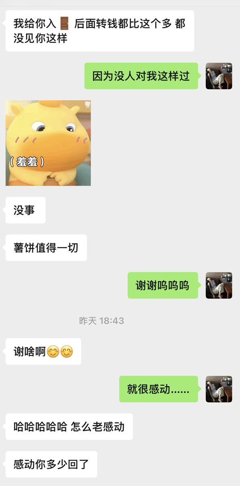

洇魔女だ
@8964_Y
@ShuBing16121816 这个人好嫉妒，感觉生活过的很惨啊

脆薯饼
@ShuBing16121816
………？？？难听的话我骂不出来了已经…，我没有强迫过任何一个人过我的🚪……，🚪我挂在主页的他自己发的口令给我，以我的命发誓……，这条也只是想表达我的震惊和感谢而已没有任何一个人这样对过我……，我觉得他人很好。但是我不理解你说“交钱获得上贡资格”是啥意思……？？你爸妈就这么教你的？？ https://t.co/hHXAoSZiX8 https://t.co/Iect2FN6xM